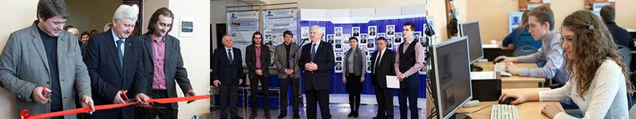

ИСТОРИЯ КАФЕДРЫ
Кафедра КиПРА - конструирования и производства радиоаппаратуры - как структурная единица Минского радиотехнического института была организована 15 марта 1964 года.
В настоящее время - кафедра ПИКС (проектирования информационно-компьютерных систем).
Первым заведующим кафедрой был избран академик АН БССР, доктор технических наук, профессор Коновалов Е.Г.
Кафедра обеспечивала выпуск студентов по специальности 0705 "Конструирование и технология производства радиоэлектронной аппаратуры".
На кафедре было 6 учебных лабораторий, конструкторский класс, в котором были представлены конструкции радиоаппаратуры, выпускаемой различными предприятиями
радиопромышленности Белоруссии.
Одновременно на кафедре стремительно развивалась наука.
Обладая незаурядными организаторскими способностями, научными и производственными связями, академик Коновалов Е.Г. своевременно выявлял запросы и проблемы промышленности
и определял научные направления кафедры.
Выполняемые на кафедре научно-исследовательские работы имели большую экономическую эффективность. Все НИР были защищены авторскими свидетельствами (сотрудниками кафедры
за первые 10 лет после ее организации было получено более 120 авторских свидетельств на изобретения). Практически все НИР были внедрены в производство.
За первые 10 лет на кафедре было подготовлено и защищено 12 кандидатских диссертаций и она стала настоящей кузницей научных и преподавательских кадров.
В 1969 г. кафедру возглавил старший преподаватель Самуйлик В.С. (1969-1971 гг.).
За это время состав преподавателей пополнился молодыми учеными, защитившими кандидатские диссертации (Тявловский М.Д., Волков В.А., Попов Г.М., Троян Ф.Д., Молочко В.И.,
Хмыль А.А., Достанко А.П. и др.). Следует особенно выделить перспективную научную деятельность в эти годы канд.техн.наук, доцента Достанко А.П. (в настоящее время
Достанко А.П. - д-р техн.наук, профессор, академик НАНБ, Заслуженный изобретатель СССР, дважды лауреат Государственной премии Республики Беларусь, заслуженный деятель
науки и техники Республики Беларусь, заведующий кафедрой электронной техники и технологии БГУИР), возглавившего учебную и научную работу на кафедре по микроминиатюризации РЭА.
Он был инициатором и создателем нескольких лабораторий, явившихся базой для будущей кафедры "Технология РЭА".
С 1972 по 1974 г. кафедру возглавлял канд.техн.наук, доцент Чердынцев В.А. (в настоящее время заслуженный деятель науки Республики Беларусь, д-р техн.наук, профессор кафедры РТС БГУИР)
специалист в области системотехники.
С его приходом усилилась учебная и научная работа. Проводились исследования по защите РЭА от влияния электромагнитных полей, применению конструкционных материалов в технике СВЧ. Состав кафедры
в этот период увеличился до 90 человек.
С 1981 по 1987 г. кафедру КиПРА возглавлял д-р техн.наук, профессор Хлопов Ю.Н.
В этот период активизируется работа по внедрению НИР в народное хозяйство. Основное внимание уделяется подготовке кадров высшей квали-фикации. Произошли существенные изменения по совершенствованию
учебного процесса.
С 1987 г. по 2007 г. кафедру возглавлял выпускник МРТИ канд.техн.наук, профессор Образцов Н.С.
При его участии в 2002 году были открыты новые специальности 1-39 02 01 Моделирование и компьютерное проектирование радиоэлектронных средств и 1-38 02 03 Техническое обеспечение безопасности.
Большое внимание в этот период уделяется вопросам организации и совершенствования учебного процесса, особенно вопросам компьютеризации проектирования на всех этапах учебного процесса,
внедрению компьютерной техники в курсовом и дипломном проектировании. Особое внимание уделяется переходу системы образования на новые образовательные стандарты и учебные планы.
Успешно проводились научные исследования по изучению влияния дестабилизирующих факторов на изделия электронной техники.
С сентября 2007 г. по февраль 2008 г. обязанности заведующего кафедрой исполнял доцент Ткачук А.М.
Продолжилась работа по совершенствованию учебно-воспитательного процесса. Прошло обновление учебных планов подготовки специалистов на первой ступени высшего образования.
Успешно проводились научные исследования. Увеличилось число магистрантов, обучающихся на кафедре.
С 2008 г. кафедру возглавляет выпускник МРТИ канд.техн.наук, доцент Цырельчук И.Н.
В течение всего времени особое внимание уделяется совершенствованию учебно-воспитательного и научно-исследовательского процессов.
На кафедре открываются впервые в Республике Беларусь новые специальности первой ступени высшего образования:
- 1-39 03 01 Электронные системы безопасности (2010 год);
- 1-39 03 01 Программирование мобильных систем (2013 год);
- 1-39 03 01 Информационные системы и технологии (в бизнес-менеджменте) (2014 год).
В 2012 году открыта специальность магистратуры, практико-ориентированное направление - 1-39 81 01 Компьютерные технологии проектирования электронных систем.
Созданы филиалы кафедры в: ОАО «КБТЭМ-ОМО»; ОАО «Авангардспецмонтаж»; ОАО «Комп и К плюс»; Войсковой части 5529.
25.10.2012 на базе кафедры открылся первый в Беларуси Международный учебно-научный центр «Android Software Center»
16.01.2013 на кафедре состоялось открытие учебно-исследова-тельского центра INTES.
22.04.2013 ректором БГУИР и президентом Института компьютерных систем (Computer System Institute) был подписан договор о взаимном сотрудничестве в области оказания образовательных услуг
жителям США на основе интегрированной подготовки специалистов уровней «Бакалавр», «Специалист», «Магистр».
В рамках данного договора состоялось торжественное открытие на базе CSI (г.Чикаго, США) филиала кафедры проектирования информационно-компьютерных систем БГУИР.
В этом филиале с использованием учебно-лабораторной базы CSI с 01.09.2013 началось интегрированное (очное + дистанционное) обучение жителей США по специальности «Проектирование мобильных систем»
04.11.2013 подписан договор об открытии на базе представительства CSI в г.Бостоне (США) филиала кафедры проектирования информационно-компьютерных систем БГУИР.
18.03.2014 на базе кафедры ПИКС состоялось торжественное открытие учебно-исследовательского центра «Совершенные системы» и академии CISCO.

На кафедре успешно работают учебно-исследовательские лаборатории: «Моделирования и компьютерного анализа электронных систем»,
«Микропроцессорных систем», «Систем безопасности» и «Теоретических основ конструирования, технологии и надежности РЭС».
Особое внимание уделяется подготовке кадров высшей квалификации. В последние годы на кафедре ежегодно обучается около 15 аспирантов, более 90 магистрантов.